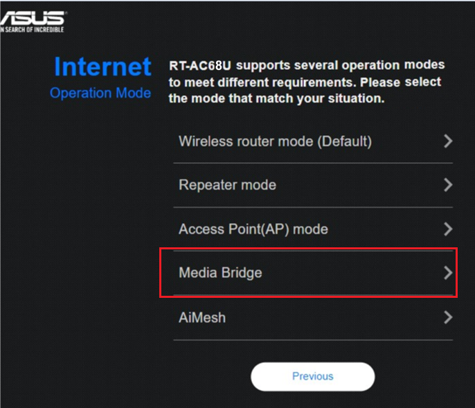

電視盒 Wi-Fi 很弱，又不能拉線？把舊路由器當無線接收器
原片發布 2020-10-11 · 點封面看原片。
電視盒放在櫃子裡，無線連線一直不順，牆邊又沒有網路孔。手上的舊路由器如果支援 Media Bridge，可以拿來接收上游 Wi-Fi，再用網路線接電視盒；但先確認功能與位置，才知道這條路適不適合。
這篇延伸自 2020 年的無線橋接影片。它提供的是另一種接入方式，能不能改善要看舊機與現場條件，不能因為最後一小段插了線，就把整條路徑當成有線網路。
最後一段插了線，前面還是走無線
Media Bridge 的主要工作，是接收上游無線訊號，讓有線終端透過它進入網路。電視盒到橋接設備之間是乙太網路線，橋接設備到上游那一段仍然是無線；這段品質不好，最後的短線不會替它消除瓶頸。
它可能讓你把接收設備放在較合適的位置，或替沒有合適無線介面的設備提供連線方式。若舊路由器本來規格不足，或上游根本收不到好訊號，效果也可能不如直接用終端的 Wi-Fi。先把路徑分段，才能公平比較。
Media Bridge、AP 和中繼模式，各做什麼
一般 AP 是透過有線上游，讓手機等裝置用無線接入；Media Bridge 則讓有線終端透過無線上游接入。中繼模式通常會延伸無線覆蓋，具體能否同時提供有線或其他功能，要查自己的型號。
這裡的橋接也不是把業者數據機改成橋接模式，更不是 Mesh 有線回程。產品名稱可能相似，先找文件中的連線圖與終端接法，不要看到「Bridge」這個字就直接選；不同功能的前提和用途可能不同。
角色示意。依型號確認 Media Bridge 支援、上游條件與指定孔位。
先確認舊機支援，不是有孔就能用
翻出舊機型號，去官方規格與手冊找是否明確支援 Media Bridge 或符合需求的用戶端接入功能。有 USB 孔、有很多 LAN 孔，或曾經當過 AP，都不能保證有這個模式。韌體版本與上游的頻段、加密支援也要一起核對。
ASUS 官方範例以自家設備示範，這不等於任何兩台不同品牌都一定能配，也不能直接推論只能同品牌。以你準備搭配的設備文件為準；若找不到支援，不要為了試一個模式就刷來源不明的韌體，先評估已有明確相容資訊的接法。
- 確認舊機精確型號與目前韌體。
- 查文件的運作模式與支援上游條件。
- 先保留原設定，確認改完如何找到管理介面。
選對上游，完成配對與接線
若依 ASUS 對應範例，第一台提供原有無線網路，第二台改成 Media Bridge，搜尋並選擇正確的上游名稱，再依流程輸入連線資料。不要只選訊號最強的名稱，還要確認那是你有權使用、也確實要連的網路。
完成後依該機型指定的有線孔接上電視或電腦。這種模式通常不由第二台另外做家用 NAT，這是模式本身的分工，並不是叫你手動關掉主路由的防火牆。管理 IP 可能改變，可以依官方工具或上游清單尋找。
- 在合適位置，先讓橋接設備成功連上預期上游。
- 依型號文件把終端接到指定有線孔。
- 確認終端取得可用網路參數，再測實際服務。

位置比藏在電視後面更值得想
橋接設備必須同時顧到上游無線接收、到終端的短線，以及電源位置。放在電視背面或深櫃裡也許方便藏線，卻可能讓接收條件變差。可以試著移到開放處，再用適當長度的線連回終端。
每次調整後用同一台終端、同一個內容比較，而不是只看橋接設備的訊號格數。若某個擺法更穩，再確認散熱、線路與日常動線是否合適。不要為了暫時接上就把線拉過常走的地方，留下另一個使用困擾。
接好後，檢查回程和裝置兩邊
先看橋接設備是否連上預期的上游，再確認有線終端是否取得正確網路參數。接著測本地與外部服務，必要時換一條已知正常的短線或另一台有線終端比較。失敗不只可能是管理 IP，別一開始就任選固定 IP 填進去。
最後和原本直連 Wi-Fi 的方式比較，看看你真正想改善的播放、更新或遊戲是否有幫助。若兩邊都不好，先回頭查上游與擺位；若舊機不受支援，則評估其他有相容依據的方案，不必因為手邊剛好有舊機就勉強採用。
你可能還想問
最後插網路線，就能叫有線回程嗎？
不能這樣概括。這個例子上游仍靠無線，終端只是最後一段用乙太網路接橋接設備，應分開看每段路徑。
改完找不到管理頁面怎麼辦？
管理位址可能改變。先查上游裝置清單或官方尋找工具，依文件確認，避免立刻重設或任意指定 IP。
舊機沒有這個模式，可以直接換 USB 網卡嗎？
那是另一種方案，也需要確認終端系統的驅動與相容性。電視盒不一定支援任意 USB 網卡，先查支援資訊再決定。
影片與參考資料
原片發布 2020-10-11。文章整理 2026-11-14，依影片公開標題、說明延伸，並以官方資料校訂。實際設定請對照你的型號與版本。